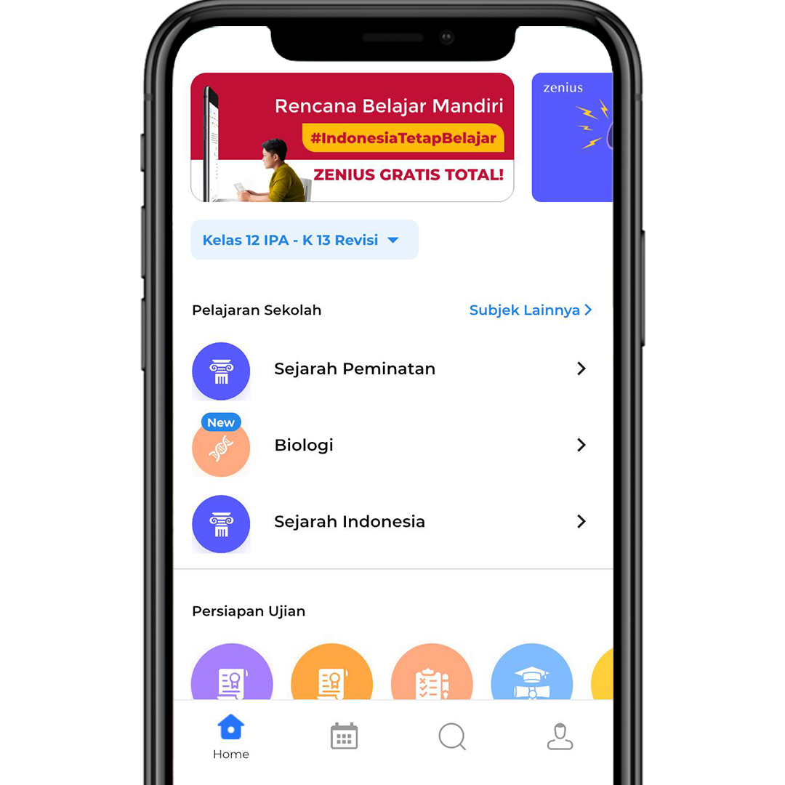
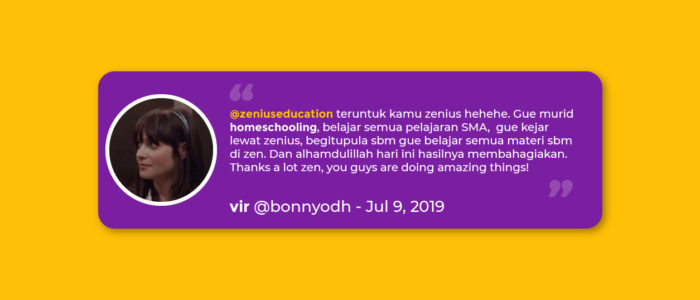

Panduan Mengelola Belajar Mandiri untuk guru, tersedia di bawah
Kenapa belajar mandiri di rumah?
GRATIS TOTAL KE:
Live Class Zenius. Tonton video pembelajaran Zenius dan bertanya langsung ke tutor-tutor terbaik Zenius.
Rencana Belajar GRATIS. Bantu proses belajar kamu jadi terstruktur dan terarah.
Puluhan ribu video materi belajar lengkap untuk SD, SMP, SMA untuk kurikulum KTSP, Kurikulum 2013, Kurikulum 2013 Revisi
Puluhan ribu video materi belajar lengkap untuk persiapan UNBK, UTBK, SPMB STAN, SIMAK UI, dan UTUL UGM.
Ratusan ribu latihan soal, ulangan harian, dan persiapan ujian yang disertai dengan video pembahasan.
Pengajaran yang santai dan bikin gampang paham
Berpengalaman dan telah mengantarkan ratusan ribu pelajar meraih cita-citanya
Pengalaman mereka belajar mandiri bersama Zenius
Cara akses semua video di Zenius bebas biaya
1. Download Zenius App di Google Play dan App Store.
2. Buka Zenius App dan daftar/log in ke akun Zenius.
3. Klik banner yang ada di homepage.
4. Masukin no handphone kamu yang aktif, dan tunggu kode verifikasi dari Zenius.
5. Masukkan kode OTP yang kamu terima.
6. Selamat Belajar Sepuasnya Bareng Zenius!
Bagaimana belajar mandiri di rumah dengan Zenius untuk kamu siswa kelas 9 dan 12?
Setelah download aplikasi Zenius, kamu bisa belajar materi dan latihan soal untuk UNBK SMP, UNBK SMA, UTBK, SPMB STAN, SIMAK UI, dan UTUL UGM. Kamu bisa juga ikut tryout UNBK dan UTBK di aplikasi Zenius yang diadakan setiap minggu hingga pelaksanaan ujian nanti.
Bagaimana belajar mandiri di rumah dengan Zenius untuk kamu yang belum mau ujian?
Untuk kamu yang belum mau ujian, kamu bisa memilih materi yang kamu mau pelajarin di mana aja dan kapan aja kamu mau. Kamu bisa ulang terus sesuka hati dan latihan soal sampai kamu benar-benar paham.
Untuk kamu yang baru memakai Zenius, kamu bisa mulai dengan menonton video-video dalam menu insight yang berisi motivasi, cara belajar efektif, manajemen waktu, dll.
Kumpulan artikel blog Zenius tentang belajar mandiri
1. Tips belajar mandiri di rumah
3. Cara belajar mandiri menggunakan Zenius
Live Class Zenius
Zenius juga akan mengadakan LIVE CLASS di social media dan youtube Zenius untuk mendukung dan menemani proses belajar mandirimu di rumah.
Di live class ini, kamu dapat menonton video pembelajaran Zenius dan bertanya langsung ke tutor-tutor terbaik Zenius!
Jangan lewatkan kesempatan belajar ini karena live class hanya berlangsung di waktu tertentu saja. Rencana belajar live class dapat kamu lihat di social media Zenius atau lewat notifikasi dari aplikasi!
Jangan lupa update aplikasi terbaru kamu di android versi 1.6.6, namun mohon maaf untuk iOS fitur ini belum tersedia di aplikasi, tetapi kamu bisa tetap akses melalui Youtube Zenius.
Pesan Zenius untuk Para Guru
Untuk membantu bapak dan ibu guru dalam melakukan kegiatan mengajar selama masa belajar di rumah, berikut adalah panduan dari Zenius yang bisa digunakan. Panduan-panduan ini juga bisa diunduh melalui link ini: